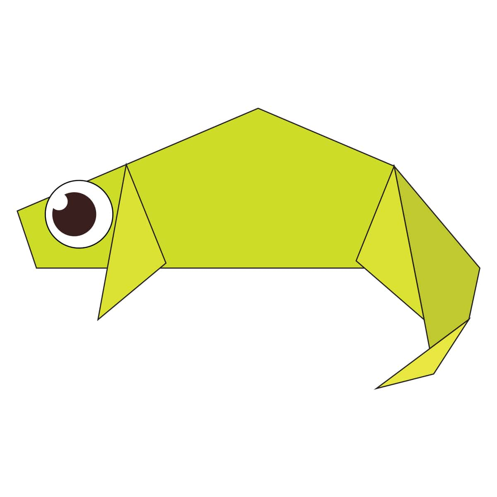

Intersting facts about chameleon
- Chameleons are that are part of iguana suborder
- Changing skin colour it is important part of communication among Chameleons
- Most Chameleons have prehistric tail to catch up the tree branches

Intersting facts about pigeon
- Pigeons are incredibly complax and intelligent
- Pigeons are renwed for their intelligent navigation
- Pigeons have excellent hearing abilites

Intersting facts about panda
- A giant panda is much bigger than your teddy bear.
- Giant pandas are good at climbing trees and can also swim
- Pandas are "lazy" — eating and sleeping make their day

Intersting facts about camel
- Camels have three sets of eyelids and two rows of eyelashes to keep sand out of their eyes.
- There are two types of camels: One humped or “dromedary” camels and two humped Bactrian camels.
- Camels have thick lips which let them forage for thorny plants other animals can't eat.

Intersting facts about cicada
- Cicadas are oval-shaped, winged insects that provide a buzzing and clicking song heard in nature throughout the summer.
- Cicadas can live a relatively long time: 4 to 17 years, depending on whether they are annual or periodical cicadas
- There are generally two types of cicadas.

Intersting facts about teddy
- The teddy was named after President Theodore Roosevelt, after he refused to shoot a bear during a 1902 hunting trip..
- nspired by a cartoon featuring the event, shopkeeper Morris Michtom and his wife Rose made a stuffed bear with a sign 'Teddy's bear' and left
- A teddy bear is a stuffed toy in the form of a bear.